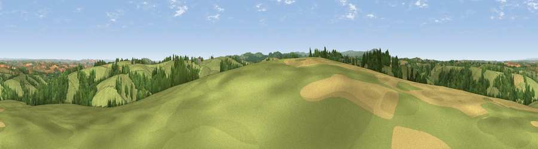

Viewpoint near Hittisleigh
#14145 in England · top 21% of its area beats it · near HittisleighThe view, rendered

A 360° render of this exact spot computed from the terrain model, tree cover and land cover — summer colours, afternoon light, calibrated against photographs of famous viewpoints. Real trees, hedges and buildings will differ in detail.
The panorama
Grey silhouette: terrain skyline in each direction (720 bearings, Earth curvature and refraction included). Dashed green: skyline with trees (+15 m) and buildings (+8 m) as obstacles. Blue strip: how far the ground is visible on each bearing.
Where the view opens
Wedge length = distance to the farthest visible ground on that bearing (vegetation-aware). Rings at 10, 25 and 50 km.
What fills the view
67% grassland · 25% woodland · 7% cropland · 1% built-up
Angular shares of the visible panorama (visual magnitude), not map area. Landscape diversity 0.37 (0–1 Shannon).
Key numbers
More beautiful places nearby
The staircase of upgrades: each row has a higher view potential than everything closer. Driving times are estimates from straight-line distance, calibrated against real road routing — check an actual route before setting out.
| Place | Direction | Drive | Score |
|---|---|---|---|
| Crosshill | SSE · 1 km | ~4 min | 62.4 |
| Viewpoint near Venny Tedburn | ENE · 5 km | ~11 min | 70.1 |
| Viewpoint near Drewsteignton | SSW · 7 km | ~14 min | 74.4 |
| Viewpoint near Moretonhampstead | S · 7 km | ~15 min | 74.8 |
| Viewpoint near Drewsteignton | SSW · 7 km | ~15 min | 75.1 |
| Butterdon Hill | S · 7 km | ~15 min | 76.4 |
| Viewpoint near Whitestone | E · 11 km | ~21 min | 79.8 |
| Viewpoint near Haytor Vale | S · 18 km | ~31 min | 80.1 |
50.74870, -3.76223 · source: screening · position refined by local search. Computed location — check access rights before visiting.